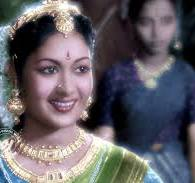
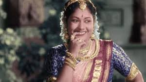
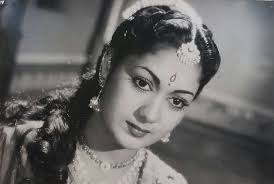

Savitri was an iconic Indian actress, playback singer, dancer, director, and producer known for her work in Telugu and Tamil cinema. She remains an enduring figure in the history of Indian cinema, celebrated for her incredible talent and versatility.
SAVITRI
Savitri was an Indian actress, singer, and filmmaker known for her works primarily in Telugu and Tamil films. Known as Nadigaiyar Thilagam (Doyen of all the actresses) & Mahanati (The great actress), Savitri was one of the highest-paid and most popular Indian actresses in the 1950s and '60s. She was one of the most accomplished and respected actresses of all time in South India.
In a career spanning three decades, Savitri starred in more than 250 films.
Her first significant role was in the 1952 film Pelli Chesi Choodu.
Later, she starred in successful and award winning films such as Devadasu (1953),
Donga Ramudu (1955),
Mayabazar (1957),

Nartanasala (1963),
featured at the Afro-Asian Film Festival in Jakarta.
She also starred in works such as Missamma (1955),
Ardhangi (1955),

Thodi Kodallu (1957),
Mangalya Balam (1959),
Aradhana (1962),
Gundamma Katha (1962),
Doctor Chakravarty (1964),
Sumangali (1965),
Devata (1965).